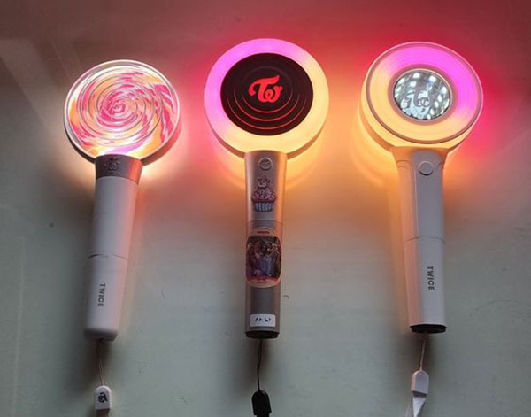
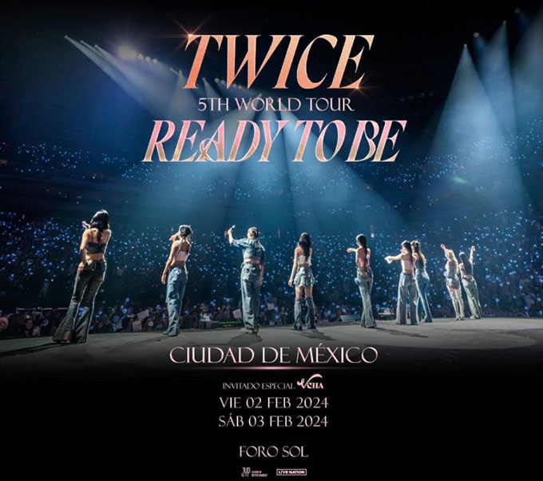
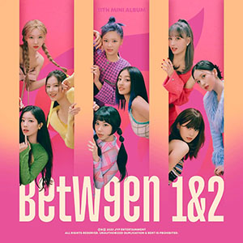
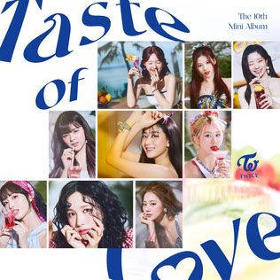

Inicio
Twice es un grupo femenino surcoreano formado por JYP Entertainment a través del programa llamado Sixteen. El grupo consta de nueve integrantes: Nayeon, Jeongyeon, Momo, Sana, Jihyo, Mina, Dahyun, Chaeyoung y Tzuyu. Twice debutó oficialmente el 20 de octubre de 2015 con el lanzamiento del miniálbum The Story Begins

Lightstick
Candy Bong
El último diseño es la tercera versión del light stick oficial de TWICE y su primera actualización en casi cuatro años. TWICE lanzó por primera vez su light stick en 2016, que tenía la forma de una paleta de caramelo, y presentó la segunda versión “Candybong Z” en mayo de 2019.

Twice en México
2 de febrero 2024
3 de febrero 2024
Se presentaron en el Foro Sol de la Ciudad de México como parte de su gira mundial "Ready To Be

Discografía
La discografía de Twice, consta de seis álbumes de estudio, tres álbumes recopilatorios, cuatro reediciones, trece EPs y veinticinco sencillos y un álbum de remezclas.

With You: th

Ready To Be

Between 1and2

Formula Of Love

Taste Of Love